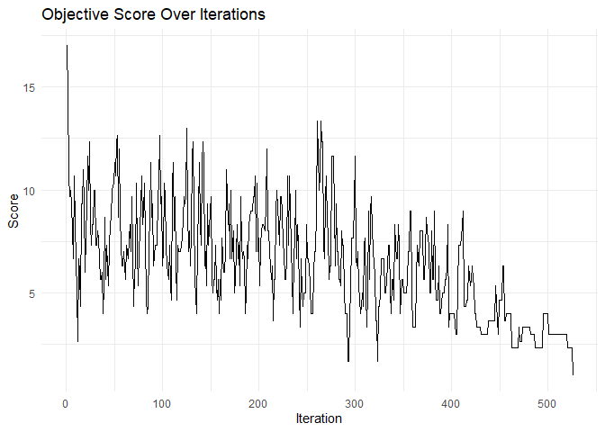
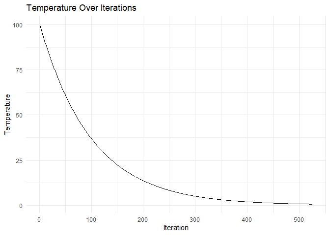

Overview
The speed package optimises spatial experimental designs by rearranging treatments to improve statistical efficiency while maintaining statistical validity. It uses simulated annealing to:
- Minimise treatment adjacency (reducing neighbour effects)
- Maintain spatial balance across rows and columns
- Respect blocking constraints if specified
- Provide visualisation tools for design evaluation
Installation
You can install the development version of speed from GitHub with any of the following options:
# pak
if (!require("pak", quietly = TRUE)) install.packages("pak")
pak::pak("biometryhub/speed")
# devtools
if (!require("devtools", quietly = TRUE)) install.packages("devtools")
devtools::install_github("biometryhub/speed")
# remotes
if (!require("remotes", quietly = TRUE)) install.packages("remotes")
remotes::install_github("biometryhub/speed")Features
- Flexible optimisation of experimental designs
- Support for blocked designs
- Customisable optimisation parameters
- Built-in visualisation functions
- Progress tracking during optimisation
- Early stopping when convergence is reached
See the package documentation for more detailed examples and options.
What’s New
See news.
Examples
Basic
A simple example optimising a 4×3 completely randomised design with 4 treatments:
library(speed)
# Create a simple design with 3 replicates of 4 treatments
df <- data.frame(
row = rep(1:4, each = 3),
col = rep(1:3, times = 4),
treatment = rep(LETTERS[1:4], each = 3)
)
# Optimise the design with seed for reproducibility
result <- speed(df, "treatment", seed = 42)
#> row and col are used as row and column, respectively.
#> Optimising level: single treatment within whole design
#> Optimal score reached at iteration 526 for level single treatment within whole design
# Plot the optimised design
autoplot(result)
# View optimisation progress
plot_progress(result)

Blocked design
You can also optimise designs within blocks:
# Create a design with blocks
df <- data.frame(
row = rep(1:6, each = 4),
col = rep(1:4, times = 6),
treatment = rep(LETTERS[1:8], 3),
block = rep(1:3, each = 8)
)
# Optimise while respecting blocks
result <- speed(df,
"treatment",
swap_within = "block",
iterations = 5000,
seed = 42
)
#> row and col are used as row and column, respectively.
#> Optimising level: single treatment within block
#> Optimal score reached at iteration 458 for level single treatment within block
# Plot the design with block boundaries
autoplot(result)
More Examples
For more detailed examples, see the getting started vignette or the vignette about more complex examples including, but not limited to:
How It Works
The speed package uses simulated annealing to optimise experimental designs by evaluating and improving layouts based on an objective function. By default the optimisation process:
-
Evaluates designs using a score (lower is better) that combines:
- Adjacency score: Penalises treatments appearing next to each other (reduces neighbour effects)
- Balance score: Rewards even distribution of treatments across spatial factors (rows, columns, blocks)
- Proposes changes by swapping treatments between plots
- Accepts improvements and occasionally accepts worse solutions to avoid local optima
- Converges to an optimised layout through gradual “cooling” of the acceptance threshold
You can customise the objective function and optimisation parameters to suit specific experimental needs (see vignettes for details).
Citation
If you use speed in your work, please cite it by using:
citation("speed")#> To cite package 'speed' in publications use:
#>
#> Rogers S, Pipattungsakul W, Taylor J (2026). _speed: Generate
#> Spatially Efficient Experimental Designs_. R package version 0.0.11,
#> <https://biometryhub.github.io/speed/>.
#>
#> A BibTeX entry for LaTeX users is
#>
#> @Manual{,
#> title = {speed: Generate Spatially Efficient Experimental Designs},
#> author = {Sam Rogers and Wasin Pipattungsakul and Julian Taylor},
#> year = {2026},
#> note = {R package version 0.0.11},
#> url = {https://biometryhub.github.io/speed/},
#> }License
This project is licensed under the MIT License - see the LICENSE file for details.
Code of Conduct
Please note that the speed project is released with a Contributor Code of Conduct. By contributing to this project, you agree to abide by its terms.